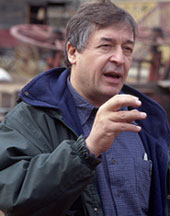
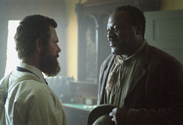

|
When the Soviets took power in Russia, one of the first
things they did was to open reeducation camps for adults and
|

Ronald Maxwell
|
brave new schools for children. In these schools Russians
were taught to hate their past, to reject their parents, to
condemn and even to forget their history. Orthodox Priests,
university professors, artists, writers, historians--these
were among the first people executed by firing squads. The
new leadership was going to rewrite history to prepare
Russia for the new Soviet man. In the 1960's, during the
Cultural Revolution, China endured a similar convulsion.
Chinese were taught that their previous 3,000 year history
was a huge mistake, a misguided journey of ignorance and
oppression. As an artist and a filmmaker I am perhaps more
sensitive than many in recognizing the embryonic murmurings
of this pseudo-intellectual menace when it appears in our
own society.
The Civil War is at the center of the American
experience. It resonates across time. The war's issues
persist in semi-resolved tensions. The war's players seem
larger than life, its battles and campaigns were of an epic
scale. Gore Vidal has called it the American Iliad. Should
this filmmaker have indulged in the frozen triumphalist
attitude of the victors, who are essentially ourselves as
modern day Americans? Or should I have made an honest
attempt to return to the actual people and conditions of
1861, when no one knew, and would not know for another four
years, who the victors or the vanquished would be? I chose
the latter, which meant good guys and bad guys would not be
broadcast in advance. The audience would have to sort things
out for themselves, scene by scene, character by character.
This is a major violation of Hollywood storytelling rules
and many movie critics called me to account for it.
People who are set in their ways don't like their
cherished assumptions challenged. Especially when these
assumptions are no deeper than acquired attitudes,
unsupported by any real knowledge. This film challenges on
both stylistic and material grounds. Hence the extremely
harsh reaction from some quarters. I've always been of the
opinion that film is a poor medium for answering complex
questions, but an excellent medium for posing them. This
film is not content to pander to contemporary expectations
or to wallow in some amorphous American triumphalism about
the War. It poses hard questions. It takes you by the
shoulders and demands that you rethink everything you've
ever thought about the War--or in the case of some
critics--to think about it for the first time.
What interests me as a filmmaker and chronicler of the
Civil War are the hard choices that real people had to make.
Our film is populated by characters with divided loyalties
and conflicting affections. Each character embodies his own
internal struggle--his own personal civil war. The film
begins with a quote from George Eliot's Daniel Deronda,
referring to the importance of place, of the local, of the
particular. I included this quote because it sets up the
central dilemma. Humans by their very nature are attached to
place and home. These attachments can be powerful in both
constructive and destructive ways.
People are also attached to family and to groups. They
can be motivated by ideas and ideals. The characters in
Gods and Generals are not immune to these forces. They are
all, to a man and a woman, pulled and pushed by these
conflicting allegiances. What may be novel in this film is
the revelation of the complex ways in which
African-Americans, like their white neighbors, were
confronted with their own hard choices.
Some critics have objected to the absence of scenes
depicting the most violent excesses of slavery. Such scenes
are not in this movie for two reasons. First, the film's
main Southern characters, Jackson and Lee, were opposed to
slavery, and although products of their time, saw blacks as
fellow humans in the eyes of God. For them the War was not
about the defense of slavery. Second, this film, perhaps for
the first time, captures the perniciousness of the
institution of slavery. That is to say, that slavery was not
perpetuated by and did not depend on sadists. It persisted
in America, as in many other countries in the nineteenth
century, because of economics. Because of cheap
labor--very cheap labor.
In Gods and Generals we meet two Afro-Virginians who,
despite being treated with respect and even love by their
white masters, still have no confusion whatsoever about
their desire to be free. Who among us would want to live in
|

Stephen Lang and Frankie Faison
portray "Stonewall" Jackson and his slave, Jim,
in Gods and Generals
|
slavery no matter how benign the immediate situation? This
unusual cinematic treatment, though historically more
typical of the Tidewater and Shenandoah Valley small town
relationships among blacks and whites during the War, was
misinterpreted by these critics as "glossing over" slavery.
Where were the floggings? The rapes? The chains? They
obviously missed the point.
In the simplistic moral outrage of their reviews they
deprive African-Americans of their full humanity--and in
their own unintended way reveal a bigotry of appearances.
They expect nineteenth century blacks to be portrayed in one
dimension only. In reality the research shows that blacks,
just like their white neighbors, felt conflicting
allegiances. Yes, a racial attachment to their fellows held
in servitude, but also an affection for the white families
with whom their lives were intertwined, and yes, patriotism
--a love of the places in which they lived--and in many
well documented cases, a willingness to defend their
country, the South.
In this film "patriotism" metamorphoses from a
philosophical abstraction to an organic life force. For many
nineteenth-century Southern whites patriotism expressed a
love of state and locality that seems strange if not
incomprehensible to inhabitants of the new global community.
For nineteenth-century Unionists, who found themselves on
both sides of the Mason-Dixon line, patriotism constituted a
love of the entire country, from Penobscot Bay to the Gulf
of Mexico. For African-Americans patriotism could mean all
of the above, further leavened with the group identity and
group allegiance fostered by slavery in the South and
prejudice in the North.
Martha, the domestic slave in the Beale family (a real
life-person), has a genuine affection for the white children
she has helped rear alongside her own. She is also tied by
emotion, tradition and circumstance to the larger community
of blacks, whose fate she shares. When Yankee looters come
to ransack her home in Fredericksburg she will not let them
pass. A few days later, when Yankee soldiers seek to
requisition the same home as a hospital, she opens the door
and attends to the wounded.
Historians write about the forces of history, about
ideology and determinism. Whatever truth there is in such
analysis, it is not the place where individuals live out
their lives. Ordinary people like you and me and the
characters who inhabit this film live their lives day by
day, hoping to make the best of it with dignity, hoping to
get b --in the context of this film, hoping to survive.
They in their time, like we today, have bonds of affection
across racial, religious, sexual, and political divides. "To
experience the full imaginative appeal of the Civil War,"
says Robert Penn Warren, "...may be, in fact, the very
ritual of being American."
Mr. Ewert, by his own published words, shows he is
possessed of a narrow, simplistic view of the American Civil
War. Moreover, as a self-proclaimed champion of the brave
new south he would like to run a reeducation camp for adults
and a brave new school for children so that Alabamians can
be taught to hate their past, to reject their ancestors, to
condemn and even to forget their history. Most disturbing,
from the point of view of a filmmaker and a seeker of the
truth, Mr. Ewert would like to intimidate anyone who
doesn't see the world through his narrow spectacles. Why
else would he have sent his provocative and incendiary
so-called review of the film to the Southern Poverty Law
Center? Isn't this the organization that exposes Klan
members, hate mongers and racists?
Does Mr. Ewert really want to include Ted Turner, a
former member of the national board of the NAACP, the
actress Donzaleigh Abernathy, who plays the domestic slave
Martha, and is the proud daughter of the great Civil Rights
leader Ralph Abernathy, and even my humble self in such
disreputable company? Does he have any historical memory
whatsoever? Does he not know the short distance between such
denunciations and the scaffold, the guillotine, the firing
squad? Is this the kind of rhetoric one expects from the
director of an internationally recognized institution of
learning and cultural preservation?
Luckily for me, my self-esteem does not rest on whether
or not I have the approbation of such a man. I have
survived thirty years in the film business and take my fair
share of criticism and praise. If Mr. Ewert's comments
related only to me they would not be worthy of a response.
The reason I have taken the trouble to write this letter is
because his comments cause me concern for what
indoctrination he may have in store for the children of
Alabama. Mr. Ewert has defiantly proclaimed himself as one
of the praetorian guards of the rigidly politically correct.
I can only hope from afar that his neighbors remember the
cruel legacy of the Soviets and Red Guards--and that as
Alabamians and Americans they protect intellectual freedom,
the unbiased study of history and the cherished memory of
their ancestors.
Source: Ronald F. Maxwell on the History News
Network, (October 20, 2003).
|